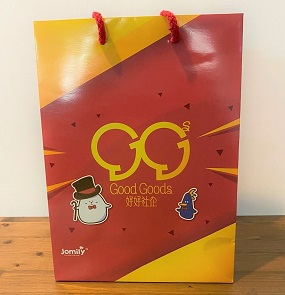

回應<新冠病毒疫情>的最新安排
捐贈物資
與社聯和香港賽馬會合作，我們接受以下物品的捐贈：
口罩 (三層過濾, >=95% BFE), 消毒劑（最理想為酒精成份>75%）, 醫用帽, 防護服, 護目鏡/防護眼罩, 醫用手套, 其他防疫物資。
抱歉：我們的運作也受新冠病毒疫情有些微影響。因為人手關係，我們正陸續處理你們慷慨的捐贈個案。如有延誤之處，敬請原諒。
為答謝你的捐贈，社聯轄下的 好好社企 特別推出「同心齊抗疫社企禮品回饋有心人」活動，透過與好人好市合作 ，有心人成功捐贈抗疫物資即可獲贈由好好社企隨機送出，來自本地大小社企的小禮品，藉此鼓勵大眾積極參與捐贈。按此進一步了解活動及其他本地社企資訊。
申領物資
好人好巿令香港的慈善機構及社福團體更快更輕易地申領物資予他們的活動及服務使用者使用。